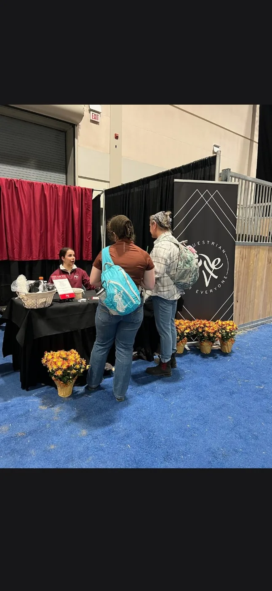
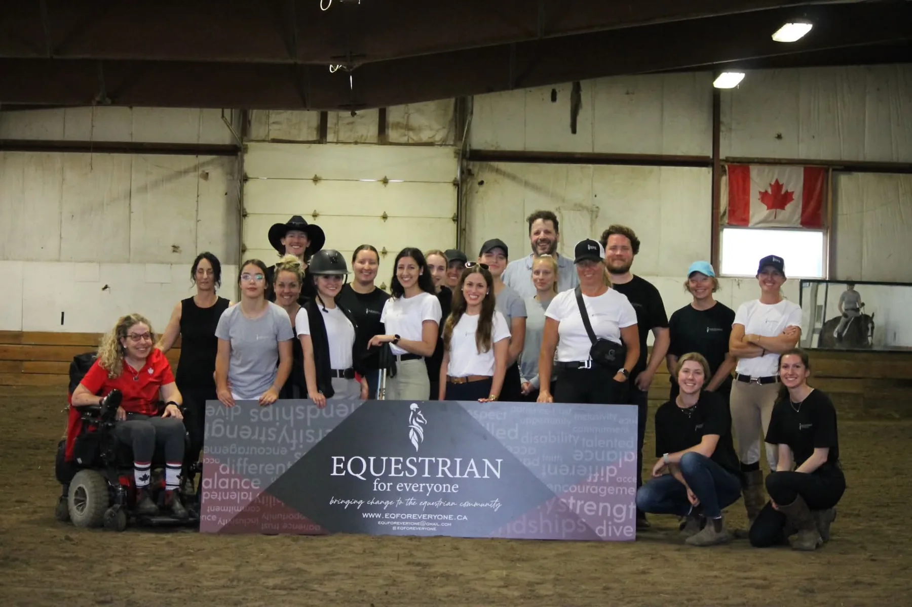
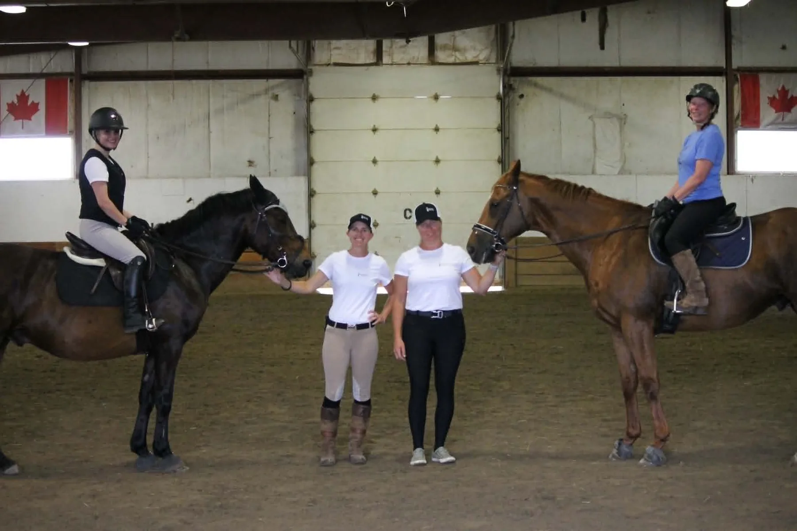
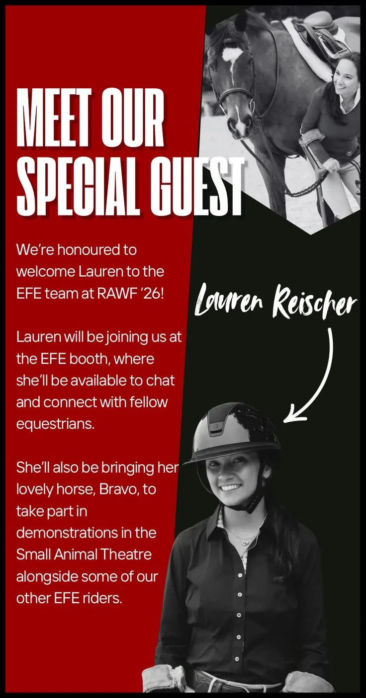
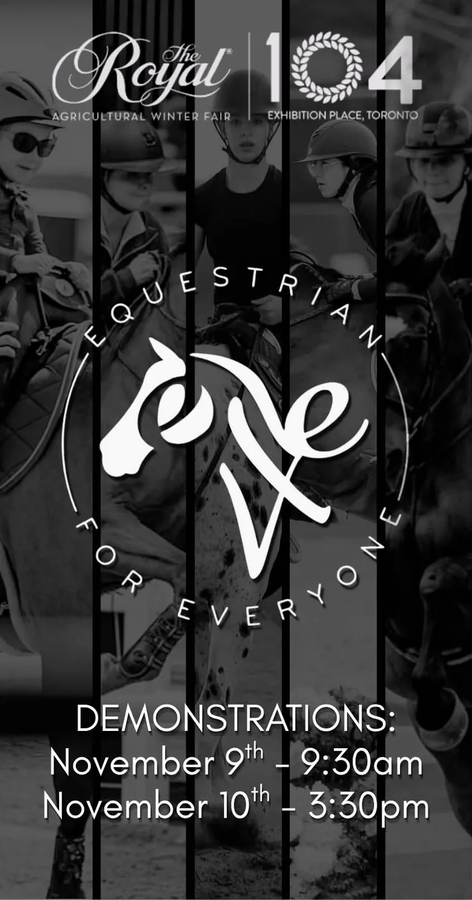
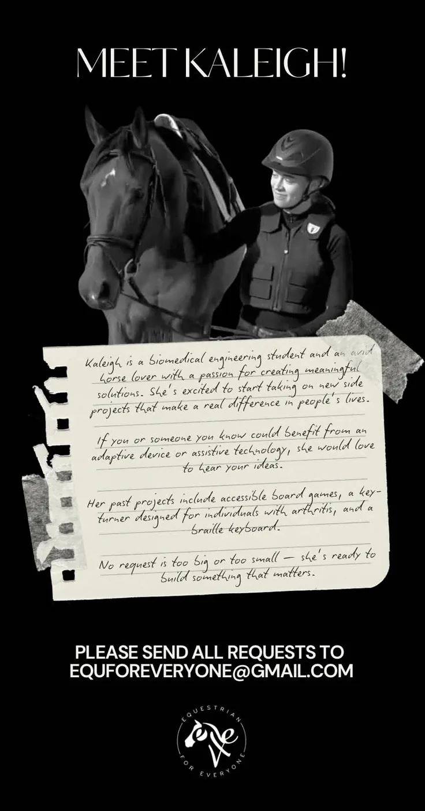

The EFE Community
Meet the Riders
Six riders. Six different journeys. Discover the people whose experiences show there is no one way to be an equestrian.
Creating opportunities, removing barriers and building one equestrian community where riders of all abilities, backgrounds and ages can belong.
Equestrian for Everyone (EFE) was born from Jenn Crawford’s personal journey as a para equestrian. After a devastating spinal injury, Jenn was told she might never walk again—let alone ride. Six months later, she was back in the saddle, adapting her riding and finding new ways to communicate with her horse.
But returning to the sport came with challenges. Jenn struggled to find coaches who understood disability and often felt like the only para rider in the room. Instead of accepting those barriers, she decided to create what she wished had existed for her.
EFE was founded to bring para and able-bodied equestrians together, create opportunities, provide education, and build a community where riders of all abilities, backgrounds, and ages can belong.
Jenn’s answer to “Where do I fit in this sport?” was simple: You fit here.
Because no one should have to give up their place in the equestrian world simply because their path looks different.
Equestrian for Everyone is committed to making the equestrian community accessible and enjoyable for all. Our mission is to foster a welcoming environment where people of all abilities, backgrounds, and ages can benefit from the therapeutic, educational, and recreational aspects of equestrian sports. Through compassionate instruction, community involvement, and a dedication to removing barriers, we believe everyone should have the chance to build confidence, improve well-being, and form meaningful connections with horses.
Follow the work happening right now—from The Royal and rider preparation to adaptive ideas, education and community connection.
EFE is preparing riders, demonstrations and educational content for The Royal in Toronto.
RIDER STORIESMeet the riders whose experiences show there is no one way to be an equestrian.
ADAPTIVE INNOVATIONEFE continues to highlight adaptive equipment, ideas and people working to remove barriers.
Six riders. Six different journeys. Discover the people whose experiences show there is no one way to be an equestrian.
The Royal gives EFE an opportunity to introduce more people to Para Equestrian sport, share rider stories and show what inclusive equestrian participation can look like.
The website becomes the next step for visitors who discover EFE in person—giving them a place to learn about Jenn, the riders, programs, resources and ways to support the organization.

EFE at The Royal — connecting directly with visitors, sharing the organization’s story and creating visibility for Para Equestrian sport.More moments from EFE clinics and community events—showing the riders, coaches and people behind the organization.


Programs, demonstrations, adaptive approaches and new ideas that help remove barriers for riders.
Clinics, demonstrations and opportunities that bring the equestrian community together.
Equipment, techniques and approaches that support safe and confident participation.
Sharing projects and people working toward better adaptive solutions.
Real photos and campaign material from EFE’s Facebook history give the website a living record of the people, events and work behind the organization.



Support helps EFE continue building awareness, education, rider opportunities, adaptive solutions and a stronger Para Equestrian community.
Get Involved